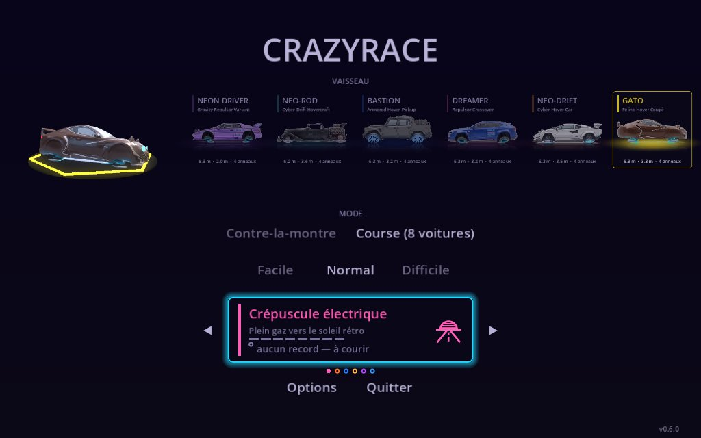
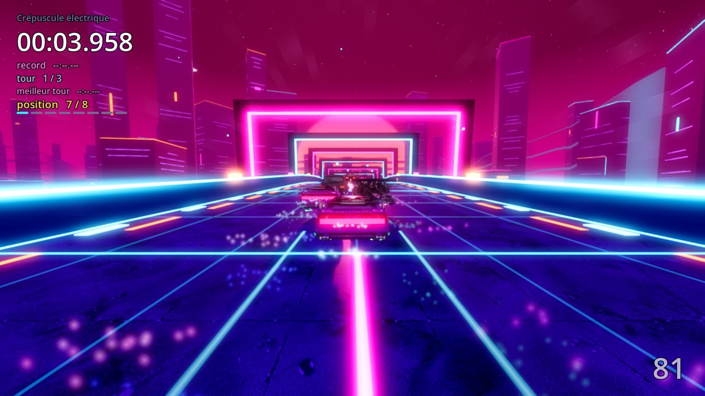
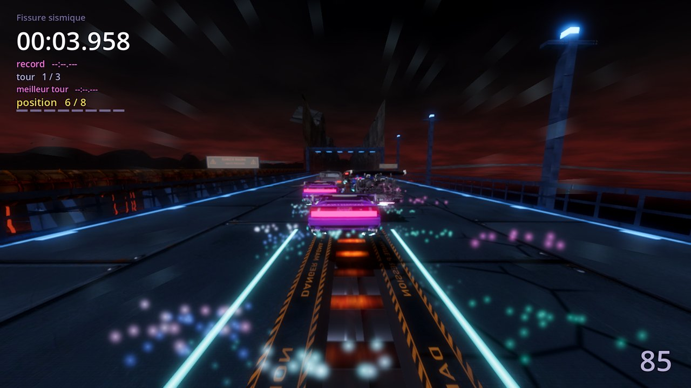
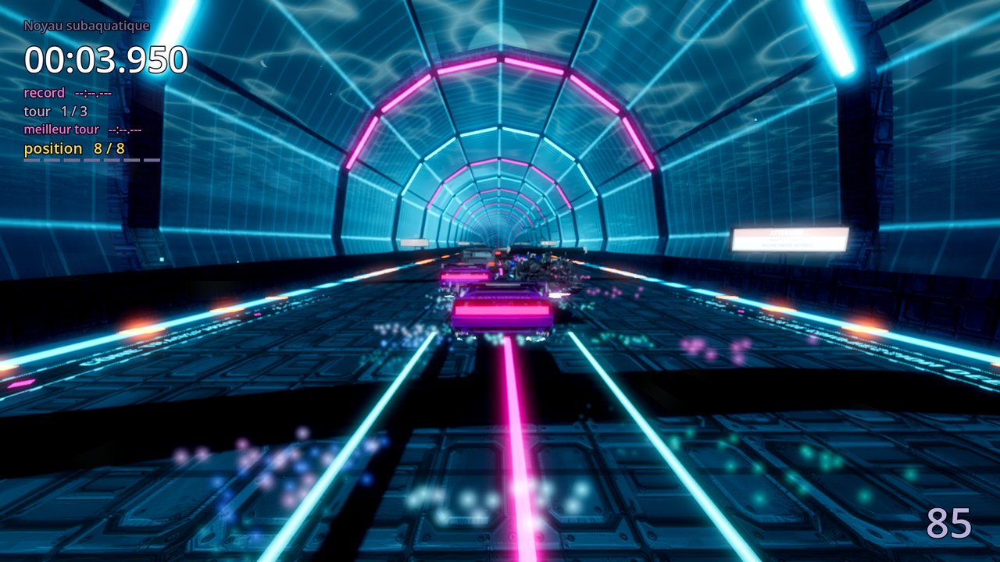
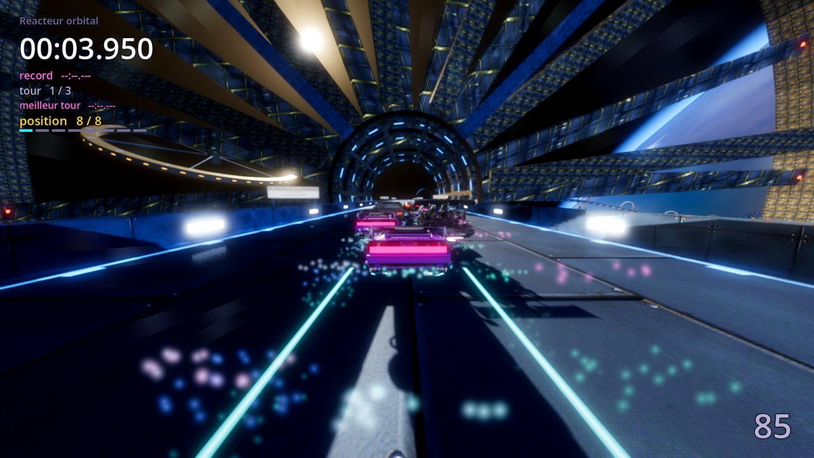
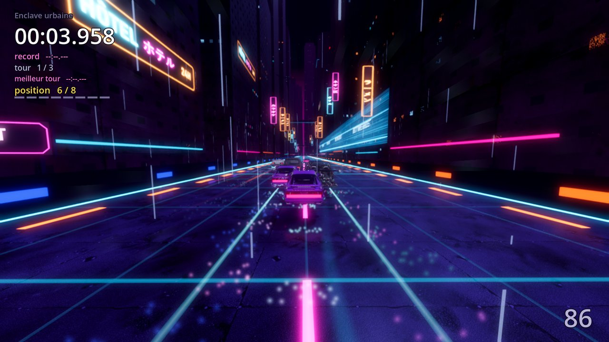
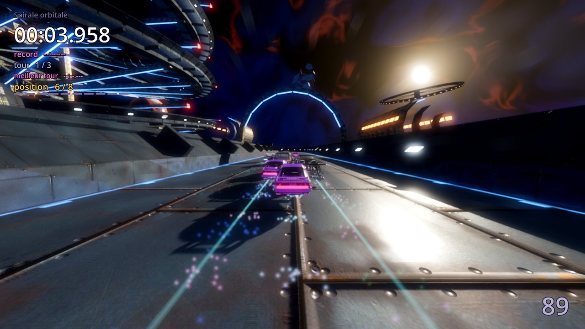

Le jeu
circuits longs, rapides et texturés, chacun avec son identité (réacteur orbital, spirale, enclave urbaine…).
véhicules anti-gravité au caractère propre — même performance, sensations différentes.
pads de boost disséminés sur les tracés pour casser ta propre trace fantôme.
ton meilleur tour reste en jeu sous forme de fantôme : le seul adversaire, c'est toi.
Captures







Configuration minimale
- Windows 10 ou 11, 64 bits
- GPU compatible Vulkan (la quasi-totalité des cartes depuis ~2016)
- ~250 Mo d'espace disque
À savoir avant d'installer
⚠️ L'installateur n'est pas signé
CrazyRace est un projet gratuit, sans budget de certificat de signature de code. Windows SmartScreen va très probablement afficher « Windows a protégé votre ordinateur ». C'est attendu : clique sur « Informations complémentaires » puis « Exécuter quand même » pour lancer l'installation.
L'installateur ne demande aucun droit administrateur : il s'installe dans ton dossier
utilisateur (%LOCALAPPDATA%\Programs\CrazyRace) et se désinstalle proprement
depuis « Applications » Windows.